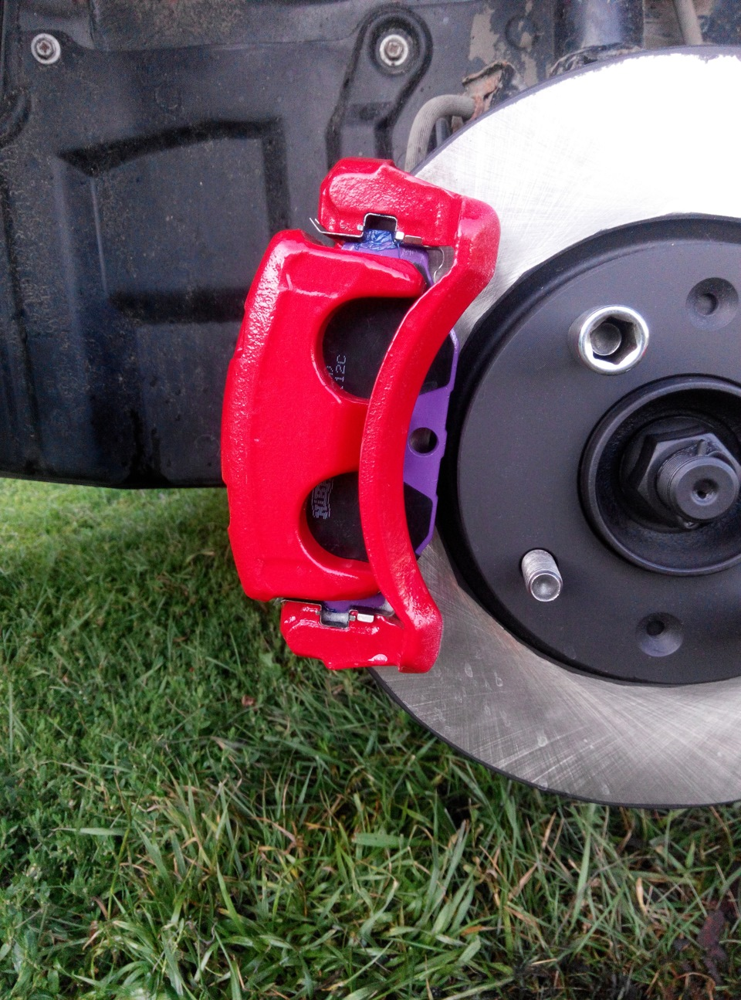

Тормозные колодки

Тормозная колодка представляет собой элемент тормозной системы, взаимодействующий с тормозной частью тормозного диска. Такое взаимодействие происходит благодаря нажатию, в результате которого автомобиль снижает скорость.
Главное условие при выпуске такой накладки с завода-производителя – высокая износостойкость в сочетании с минимальным воздействием на тормозной диск. Накладка должна справляться с высокими температурами и не крошится. Почему?
Все дело в том, что в момент торможения диски в буквальном понимании раскаляются. По этой причине каждый производитель таких деталей держит в строгом секрете технологию изготовления. Конкуренты не дремлют!
Накладка закрепляется на пластине множеством способов, например, с помощью клепок или клея, который сможет выдержать неимоверную будущую нагрузку.Современный рынок предлагает несколько видов тормозных колодок:
Полуметаллические.
Этот тип отличается прекрасной теплоотдачей и длительным сроком службы. Их минус в высоком уровне шума и неспособностью корректно работать в условиях низкой температуры воздуха.
Органические.
Мягкий тип колодок, практически бесшумный. Минус один – быстрый износ и создание большого количества пыли.
Керамические.
Самый дорогой вариант. И бесшумно, и долговечно!Низкометаллические. Неплохой тип колодок, но тоже довольно шумный. Кстати, изготавливаются по той же формуле, что и вариант 2.
Ниже приведены автозапчасти от наших партнеров,которые всегда доступны для покупки/заказа
| Бренд |
Цена (татиты) |
Ср. рейтинг покупателей |
| Car armor |
10937 |
4 |
| Speed Webe |
15611 |
8 |
| Torctune |
13010 |
5 |
| Axlade |
18136 |
10 |
| Drivermaster |
19310 |
10 |
Для покупки/заказа автозапчастей обратитесь в офис или на наши контакты
Не нашли нужный товар обратитесь к нашему дежурному менеджеру:+7 (949) 312-92-99 ПН-ПТ с 9 до 17:00. В субботу - до 14:30. Перед выездом за товаром, обязательно уточняйте статус заказа в личном кабинете на сайте или у менеджера. *Благодарим за понимание.